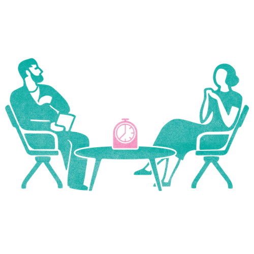

Mit der Academy erhaltet ihr im Business-Plan praxisnahe Lernmodule rund um Facilitation und wirksame Transformation.
Gemeinsam mit 9 Spaces zeigt Plan International Deutschland, wie wertebasiertes Arbeiten Orientierung gibt – nach innen wie nach außen.

Gute Zusammenarbeit braucht regelmäßiges Feedback. So setzt ihr eine einfache Feedback-Routine auf.
Mit diesem Tool gebt ihr euch qualitativ hochwertiges Feedback im Team.
Weniger reden und mehr zuhören: eine Spaziergangsübung zur Anwendung der vier Arten des Zuhörens.
Ein Tool, das euch hilft, durch wertschätzenden Austausch euer Teamgefühl zu stärken